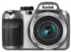

器材
党
全部器材
产品年表
名词百科
榜单
器材库
> 不可换镜头数码相机 > AZ361

柯达
AZ361
分类
不可换镜头数码相机
点评
0 条
图片
5 张
评测
0 篇
采用1600万像素CCD和36倍光学变焦镜头，具备光学防抖功能，支持720p高清视频录制，机身背面搭载3.0英寸46万像素LCD。
产品类型
不可换镜头数码相机
综合评分
暂无评分
无忌评测
柯达AZ361试用体会
规格参数
网友点评
(0)
产品图 / 样片
(5)
评测文章
(0)
该产品没有存档的规格参数
该产品暂无存档的网友点评
产品图 / 样片
AZ361
评测 / 相关文章
该产品暂无存档的评测文章
相关文章
［试用］柯达AZ361试用体会
（原站已下线）
［资讯］柯达推出两款高倍变焦数码相机
（原站已下线）
［资讯］柯达发布2013年第一季度数码新品
（原站已下线）